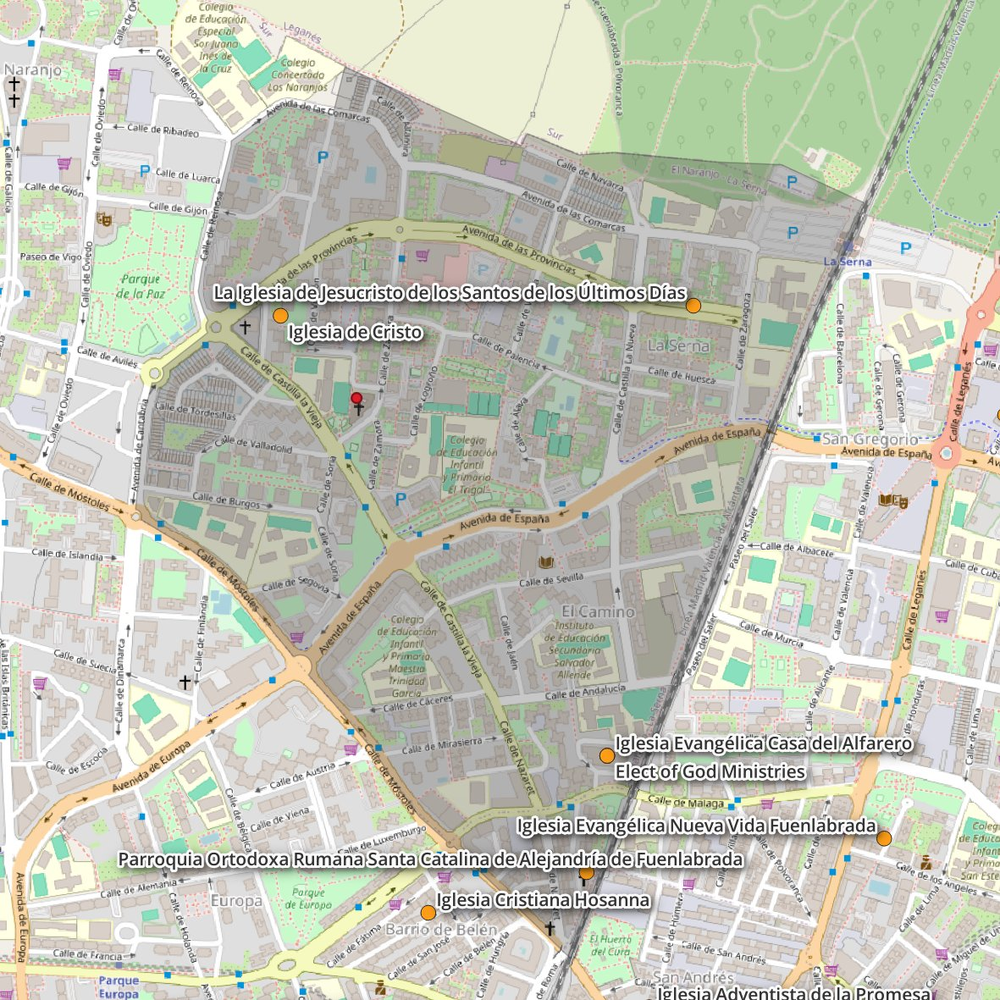
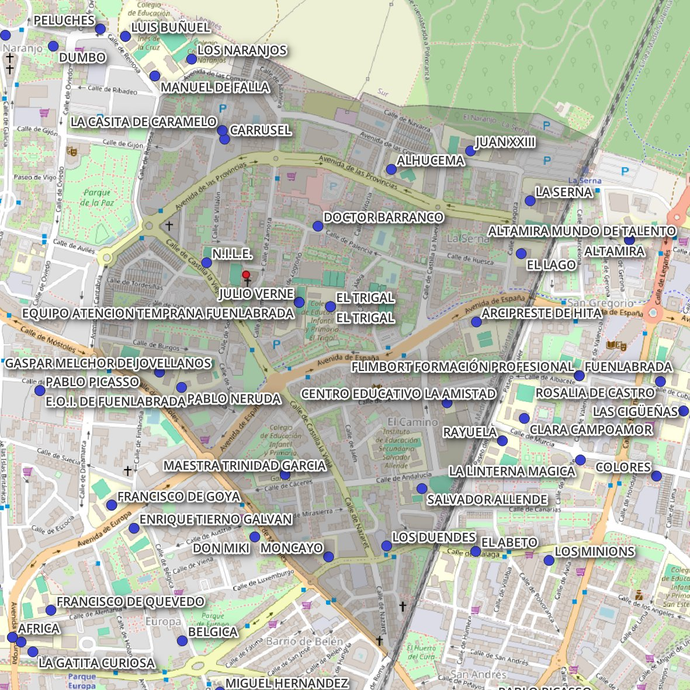

Puntos de interés en el territorio parroquial
Parroquia Nuestra Señora de Belén (Fuenlabrada) · Arciprestazgo de Fuenlabrada
Entidades religiosas no católicas

6 entidades religiosas no católicas en el territorio de la parroquia.
Evangélicos (4)
- Comunidad Evangélica Maranatha ShalomAvenida de las Regiones 2 2º, Local 44, Fuenlabrada
- Elect of God MinistriesAvenida de las Regiones 2 1º Planta, Local 28, Fuenlabrada
- Iglesia de CristoCalle Frómista 10 Bajo A, Fuenlabrada
- Iglesia Evangélica Casa del AlfareroAvenida de las Regiones 2 local 44 2ªplanta, Fuenlabrada
Iglesia de Jesucristo de los Santos de los Últimos Días (1)
- La Iglesia de Jesucristo de los Santos de los Últimos DíasAvenida de las Provincias 2, Fuenlabrada
Ortodoxos (1)
- Parroquia Ortodoxa Rumana Santa Catalina de Alejandría de FuenlabradaCalle Villaviciosa de Odón 4, Fuenlabrada
Fuente: Registro de Entidades Religiosas del Ministerio de la Presidencia, Justicia y Relaciones con las Cortes. Situación en el mapa: dirección geocodificada con CartoCiudad (IGN) o Nominatim (OpenStreetMap).
Centros educativos

16 centros educativos en el territorio de la parroquia (público: 11, privado concertado: 4, privado: 1).
| Centro | Tipo | Titularidad | Domicilio | Web |
|---|---|---|---|---|
| ALHUCEMA | Centro privado de educación infantil, primaria y secundaria | Privado concertado | Avenida de las Provincias, 51, 28941 Fuenlabrada | Página web |
| ARCIPRESTE DE HITA | Colegio de educación infantil, primaria y secundaria | Público | Avenida de España, 26, 28941 Fuenlabrada | Página web |
| CENTRO EDUCATIVO LA AMISTAD | Centro privado de educación infantil, primaria y secundaria | Privado concertado | Calle de Sevilla, 10, 28941 Fuenlabrada | Página web |
| EL LAGO | Escuela infantil | Público | Calle de Zaragoza, 6, 28941 Fuenlabrada | Página web |
| EL TRIGAL | Colegio de educación infantil y primaria | Público | Calle Álava, 11, 28941 Fuenlabrada | Página web |
| EQUIPO ATENCION TEMPRANA FUENLABRADA | Equipo de orientación educativa y psicopedagógica. Atención temprana | Público | Calle Logroño, 2, 28941 Fuenlabrada | Página web |
| EQUIPO GENERAL FUENLABRADA | Equipo de orientación educativa y psicopedagógica. General. | Público | Calle Logroño, 2, 28941 Fuenlabrada | Página web |
| GASPAR MELCHOR DE JOVELLANOS | Instituto de educación secundaria | Público | Calle de Móstoles, 64, 28941 Fuenlabrada | Página web |
| JUAN XXIII | Colegio de educación especial | Público | Avenida de las Comarcas, 2, 28941 Fuenlabrada | Página web |
| LA CASITA DE CARAMELO | Escuela infantil privada | Privado | Plaza Santander, 14, 28941 Fuenlabrada | Página web |
| LA SERNA | Instituto de educación secundaria | Público | Calle de Zaragoza, 8, 28941 Fuenlabrada | Página web |
| MAESTRA TRINIDAD GARCIA | Colegio de educación infantil y primaria | Público | Calle de Cáceres, 6, 28941 Fuenlabrada | Página web |
| MONCAYO | Centro privado de educación infantil, primaria y secundaria | Privado concertado | Avenida Regiones, 12, 28941 Fuenlabrada | Página web |
| N.I.L.E. | Centro privado de educación infantil, primaria y secundaria | Privado concertado | Calle de Castilla la Vieja, 18, 28941 Fuenlabrada | Página web |
| PABLO NERUDA | Colegio de educación infantil y primaria | Público | Calle de Segovia, 1, 28941 Fuenlabrada | Página web |
| SALVADOR ALLENDE | Instituto de educación secundaria | Público | Calle de Andalucía, 12, 28941 Fuenlabrada | Página web |
Fuente: registro de centros educativos de la Comunidad de Madrid. Solo se recogen los centros de alta.